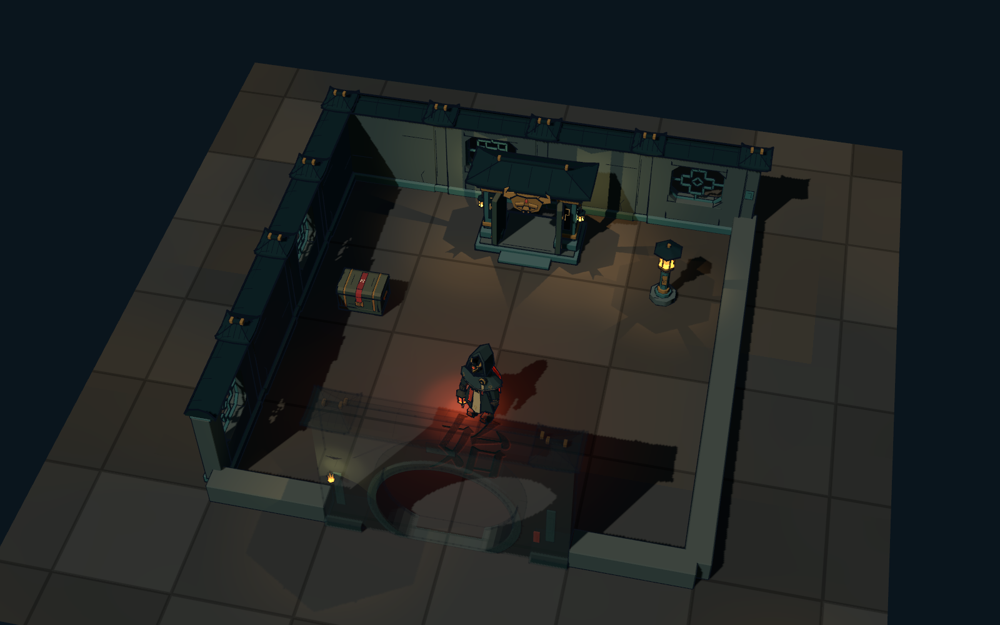
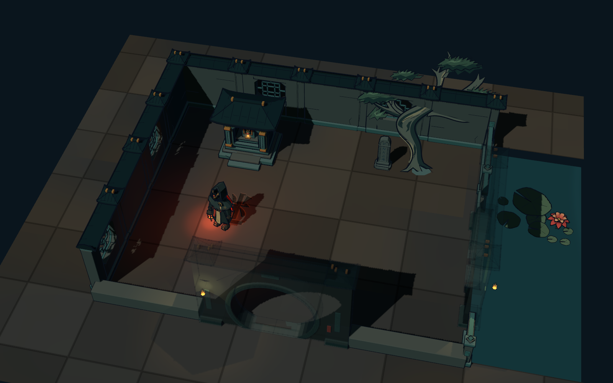
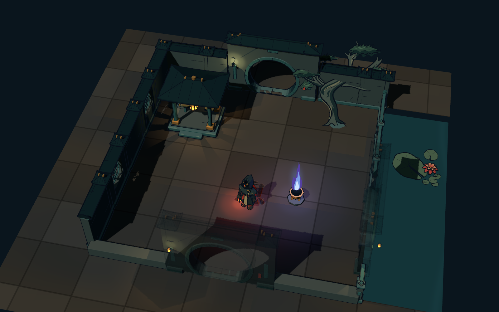
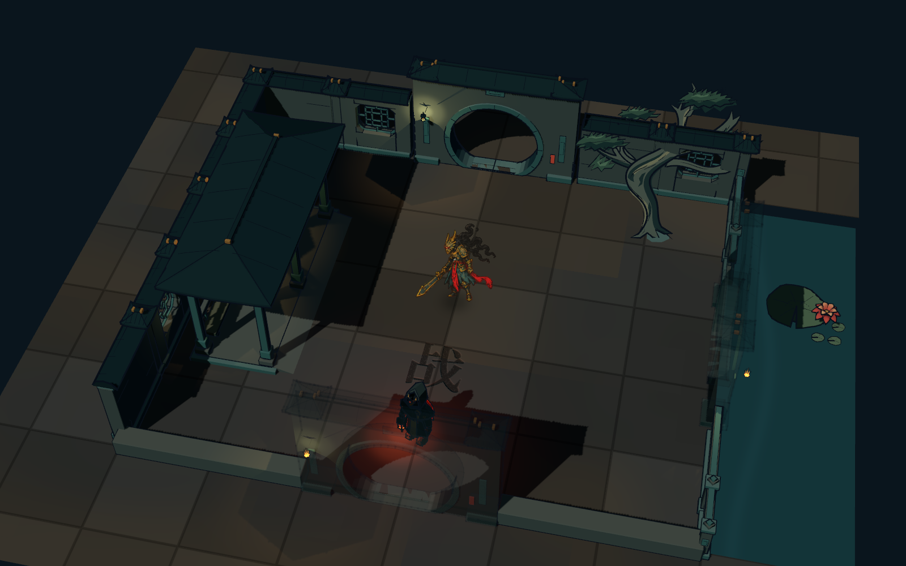
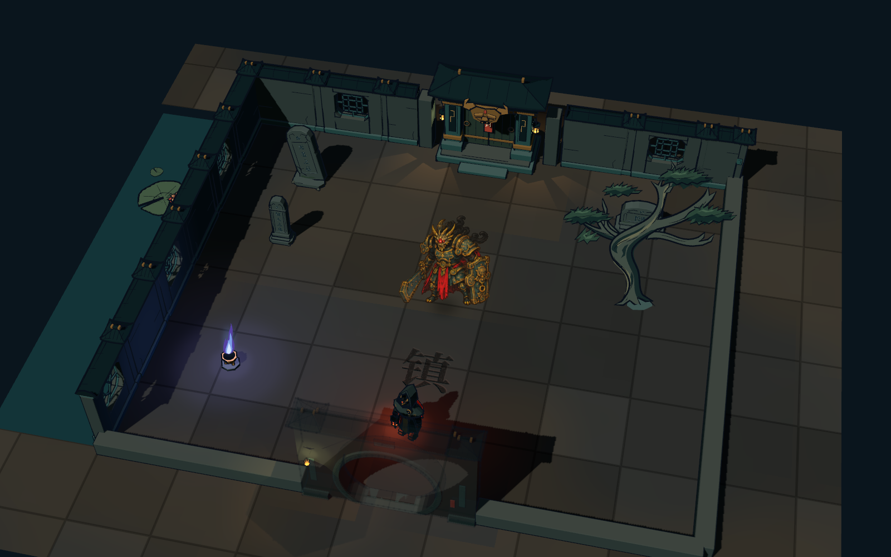
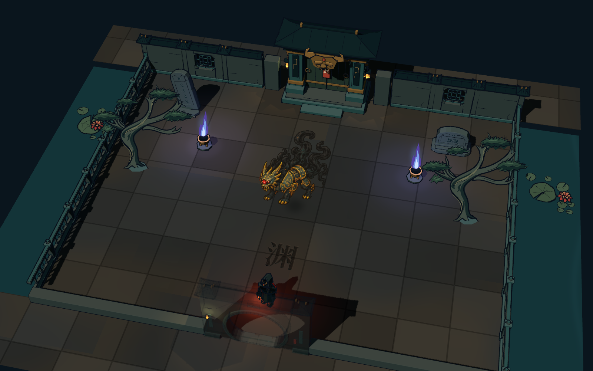
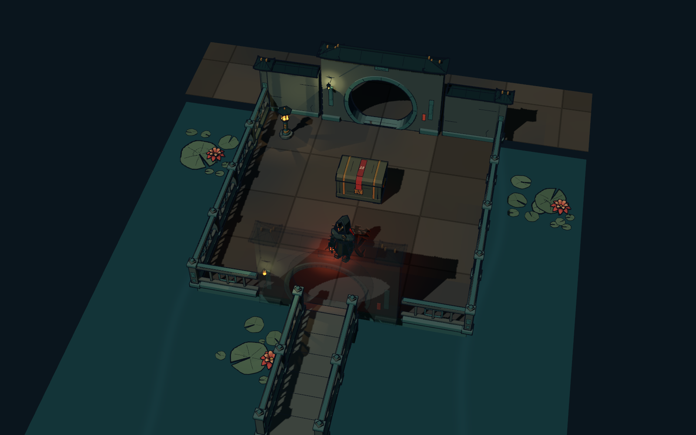
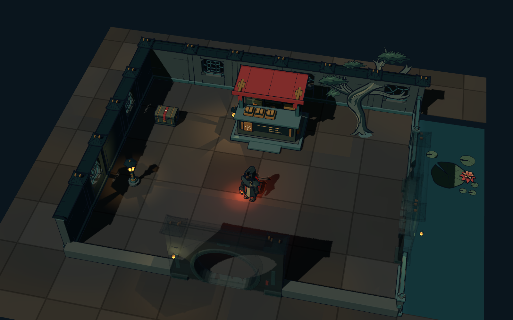

现有模型原生组装 · 统一丹青与朱砂配色 · 独立工作台实景截图

字匣靠墙，中央整备。唯一出口连到第一间庭院。

碑龛偏左，出门折向东侧。树与残碑组成一角，中央保持空出。

亭在左后、鬼火在右前，主路不穿亭柱；东侧临水，可接第三扇门。

游廊沿西侧，中央约3×3空庭承载遭遇；北、东两出口供分叉或汇合。

北面镇门、两翼高低碑，中间留宽阔交战庭。清理后北门开启。

兽面大门在后，两翼碑灯夹景。中央仪式庭留白，通关出口不与入口混用。

小石台、背墙与两侧栏杆，南接短桥。宝匣旁预留绕行位置。

字摊靠后墙，箱柜偏左；前方两格整备区连到东侧出口。